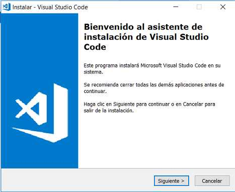
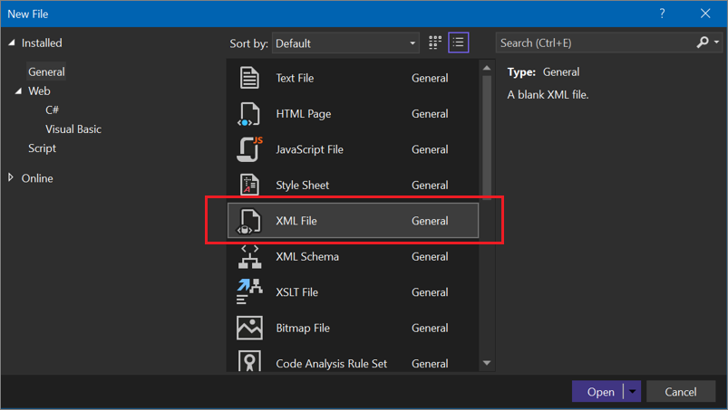
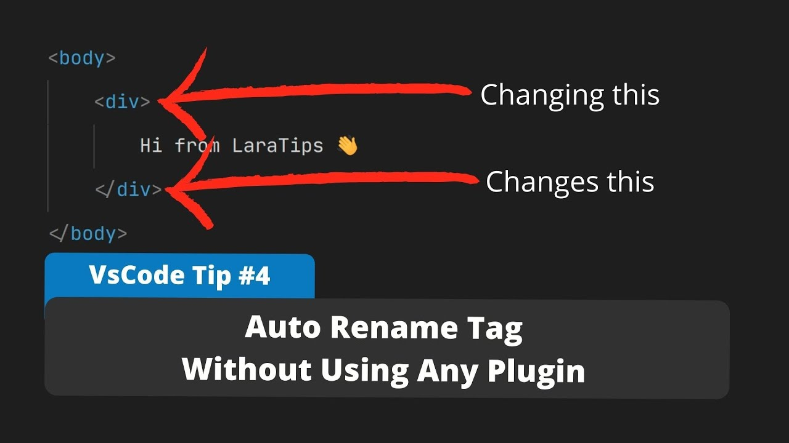
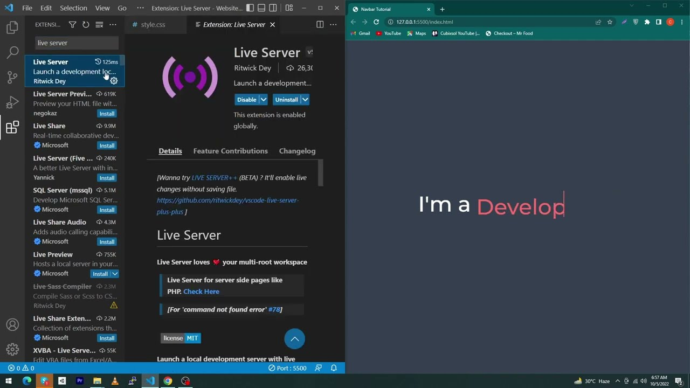
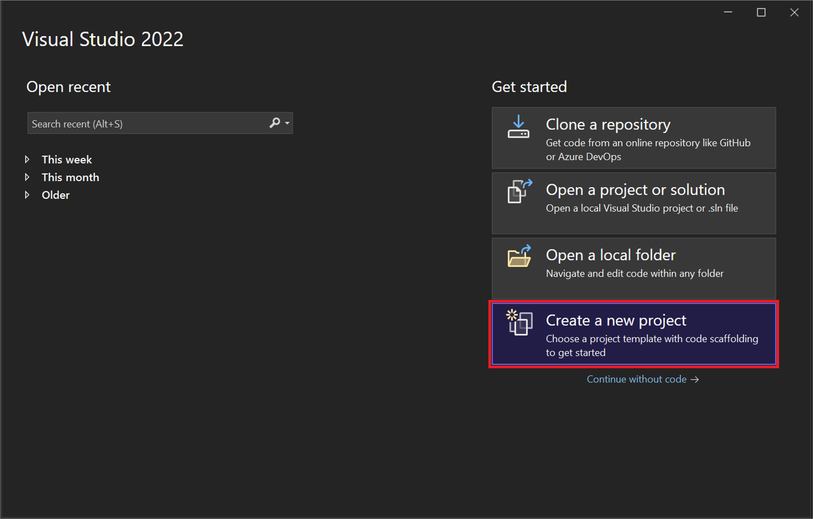
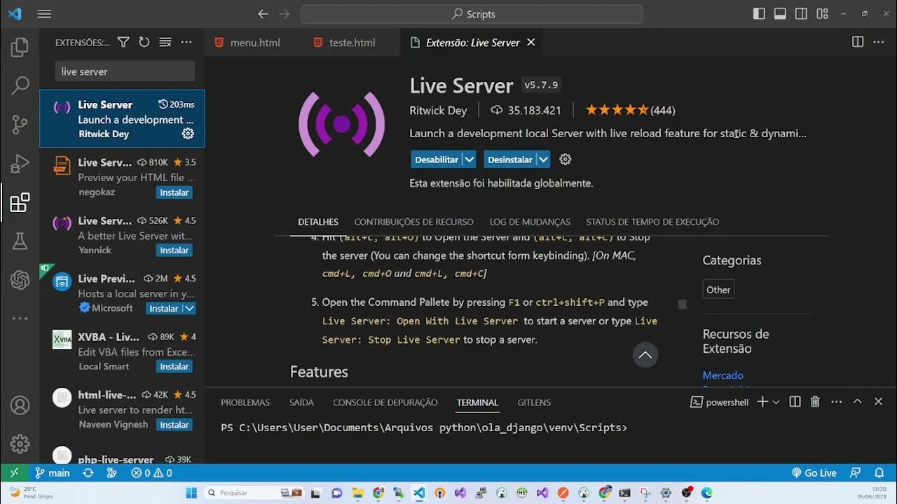
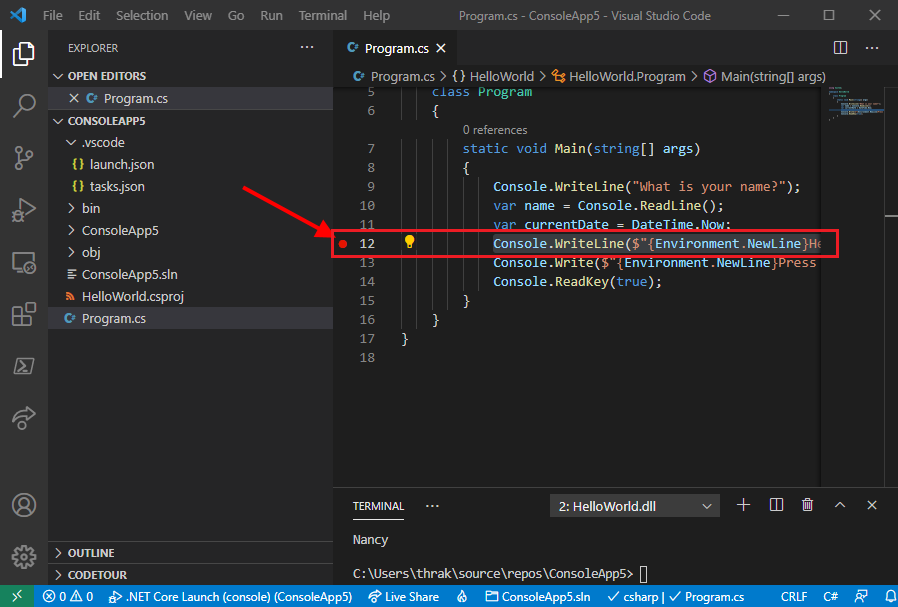

Visual Studio Code (VS Code) es una excelente opción para trabajar con HTML debido a su funcionalidad avanzada y las numerosas extensiones disponibles para mejorar la productividad en el desarrollo web. Aquí hay algunos pasos básicos para empezar a trabajar con HTML en Visual Studio Code:
1. Instalar Visual Studio Code:
Si aún no tienes VS Code instalado, puedes descargarlo desde el sitio oficial de Visual Studio Code: Descargar VS Code .

2.Instalar Extensiones Relevantes:
Puedes mejorar la experiencia de desarrollo web instalando extensiones específicas para HTML. Algunas extensiones útiles incluyen:
- Fragmentos HTML: Proporciona atajos para escribir rápidamente fragmentos de código HTML.

- Auto Rename Tag: Cambia automáticamente el nombre de la etiqueta de cierre cuando modifica el nombre de la etiqueta de apertura.

- Live Server: Crea un servidor local para desarrollar y ver tus cambios en tiempo real en el navegador.

Para instalar extensiones, ve a la pestaña de Extensiones en VS Code (puedes acceder a ella con Ctrl+Shift+Xo Cmd+Shift+X), busca las extensiones deseadas y haz clic en "Instalar".
3.Crear o Abrir un Proyecto HTML:
- Puedes crear un nuevo archivo HTML desde cero con la extensión HTML Snippets para autocompletar las etiquetas HTML básicas.

- También puedes abrir un proyecto HTML existente utilizando la opción "Abrir carpeta..." en VS Code.

4.Iniciar un Servidor Local (opcional):
Si has instalado la extensión Live Server, puedes hacer clic con el botón derecho en tu archivo HTML y seleccionar "Open with Live Server". Esto iniciará un servidor local y abrirá tu página en tu navegador predeterminado.

5.Autocompletar y Sugerencias:
VS Code proporciona autocompletar y sugerencias mientras escribes código HTML, lo que facilita la creación rápida y precisa de tu código.

6.Depuración (opcional):
Si necesitas depurar tu código HTML, VS Code también ofrece herramientas de depuración integradas que puedes utilizar.

Recuerda que estas son solo algunas sugerencias básicas para empezar con HTML en Visual Studio Code. A medida que explores más a fondo, descubrirás muchas otras características y extensiones que pueden mejorar aún más tu flujo de trabajo de desarrollo web.
| Etiquetas |
Descripción |
| table |
Define el inicio de una tabla, contenedor principal que engloba toda la tabla. |
| thead |
Define la sección de encabezado de la tabla, agrupa las filas que contienen encabezados de columna |
| tbody |
Define la sección del cuerpo de la tabla, agrupa las filas que contienen datos de la tabla |
| tr |
Define la sección del cuerpo de la tabla, cada instancia de esta etiqueta representa una fila en la tabla. |
| th |
Representa un encabezado de columna, generalmente ubicado dentro de la sección |
| td |
Representa una celda que contiene datos, generalmente ubicada dentro de la sección |
| caption |
Proporciona una descripción o título opcional para la tabla. |
| colgroup y col |
Permite aplicar estilos o propiedades a grupos específicos de columnas. |
| tfoot |
Agrupa las filas que contienen resúmenes o totales, generalmente ubicadas al final de la tabla. |
| Etiquetas |
Descripción |
| nav |
Encapsula el conjunto de enlaces que componen el menú. |
| ul |
Contiene elementos de lista que representan las opciones del menú. |
| ol |
Similar a ul, pero con números o letras como marcadores. |
| li |
Cada elemento dentro de ul u ol representa una opción en el menú. |
| a |
Puede envolver el texto del ítem de menú y proporcionar el destino del enlace. |
| div |
Puede utilizarse para agrupar y organizar elementos del menú. |
| span |
Puede utilizarse para aplicar estilos o manipular contenido dentro del menú. |
| img |
Puede utilizarse para representar íconos o gráficos en el menú. |
| Etiquetas |
Descripción |
| form |
Encapsula todos los elementos del formulario y proporciona atributos para configurar el comportamiento del formulario, como la acción (la URL a la que se enviarán los datos) y el método (GET o POST). |
| input |
Puede representar varios tipos de campos, como texto, contraseña, checkbox, radio, etc. |
| textarea |
Permite a los usuarios introducir texto largo, como comentarios o descripciones. |
| select |
Crea una lista de opciones que los usuarios pueden seleccionar. |
| option |
Representa una opción en el menú desplegable. |
| button |
Puede utilizarse para enviar el formulario o ejecutar scripts en respuesta a eventos del usuario. |
| fieldset |
Puede contener etiquetas como "legend" y ayuda a organizar y estructurar el formulario. |
| legend |
Proporciona una descripción o título para el grupo de elementos dentro del "fieldset". |
| div |
Puede utilizarse para agrupar y organizar secciones del formulario. |